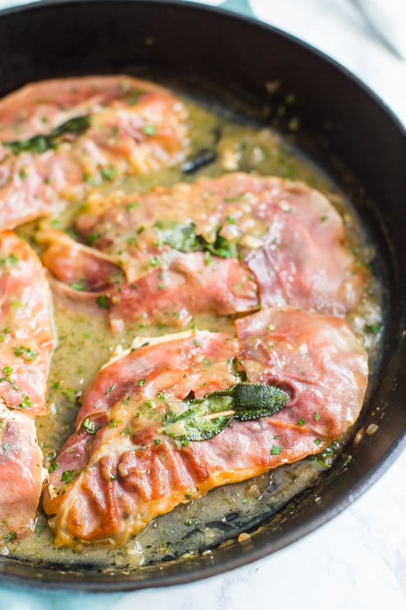

Chicken Saltimbocca

What is chicken saltimbocca?
Chicken saltimbocca is chicken breast wrapped in sage
and prosciutto and then quickly sautéed. You can be
creative with your sauce, but usually it consists of a quality dry
white wine like Chardonnay or Sauvignon Blanc and some chicken stock.
If you aren't familiar with Saltimbocca, the word literally means
"jump in the mouth" in Italian which very accurately describes
how delicious this dish is.
Ingredients
- 4 Chicken cutlets
- 2 Teaspoons of minced fresh sage
- 4 Fresh sage leaves
- 4 Slices of prosciutto
- 2 Tablespoons of olive oil
- 1 Shallot, minced
- 1 Teaspoon of flour
- 1/2 Cup of chicken broth
- 1/3 Cup of dry white wine
- 2 Tablespoons of butter
- 2 Teaspoons of fresh parsley, finely chopped
- 1 Tablespoon of lemon juice
- Salt
- Pepper
- Toothpicks (to secure the sage leaf into the piece of chicken)
Instructions
- Salt and pepper both side of the chicken cutlets
- Sprinkle one side of each cutlet with 1/2 teaspoon of the minced sage
and then place a slice of prosciutto on the top of the sage.
- Place a sage leaf on the top of each piece of prosciutto and the secure it into
the piece of chicken with a toothpick.
- Heat the oil in a large skillet over medium heat. Once hot, add
in the cutlets, prosciutto side down, and cook for about 3 minutes.
Flip and then cook on the other side until chicken is cooked
through (3-5 additional minutes). Once done, transfer chicken
to a plate and cover with foil.
- On the same frying pan add in the shallot and cook for about
2 minutes until softened. Stir in the flour and cook for 1 additional minute.
- Whisk in the wine and broth, making sure to scrape up the brown bits
from the bottom of the skillet (this is where much of the flavor comes from).
Bring to a simmer and cook for about 4 minutes until the sauce is thickened
and reduced a bit.
- Turn heat down to low and whisk in the butter, parsley and lemon juice
until fully combined.
- Return the chicken to the skillet, prosciutto up, as well as any
juices that collected on the plate. Simmer for about a minute so that the chicken
can hear through again.
- Remove from heat and serve the chicken with the sauce divided evenly
among 4 cutlets.
Credits:
Return to the top
Return to main page